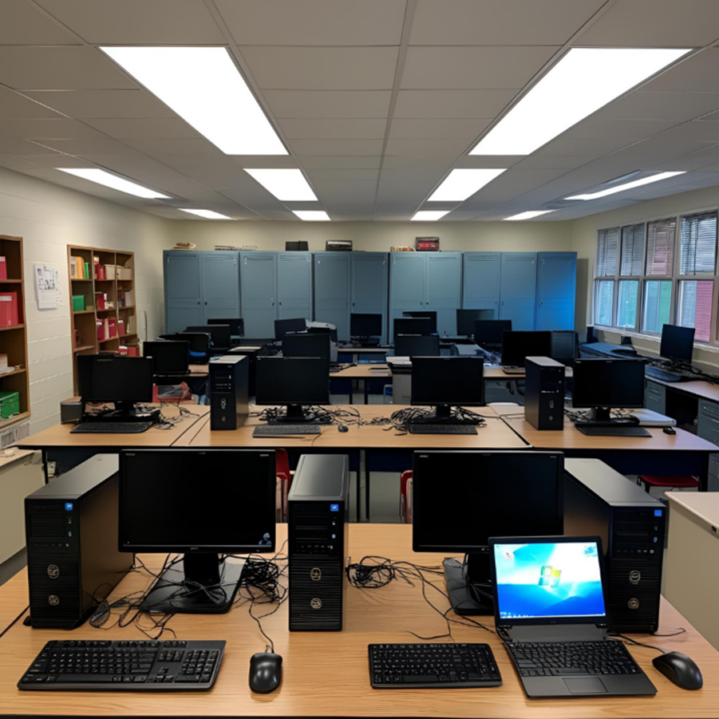

Organizando o laboratório de informática

Esta atividade propõe a investigação de possibilidades de reorganização do laboratório de informática da escola, considerando a circulação no ambiente, a disposição dos móveis, o conforto dos usuários e o melhor aproveitamento do espaço. A proposta mobiliza conhecimentos matemáticos e de diferentes áreas para observar o ambiente, coletar informações, construir representações e elaborar projetos de reorganização.
Problema investigativo
O laboratório de informática da escola apresenta dificuldades relacionadas à circulação e à organização do espaço. Considerando as necessidades dos usuários e os elementos presentes no ambiente, de que maneira ele poderia ser reorganizado? Que mudanças poderiam ser propostas para melhorar a utilização do espaço?
Informações da atividade
Materiais para download
Como a atividade foi desenvolvida
A atividade foi desenvolvida a partir de uma necessidade observada no contexto escolar. Inicialmente, os estudantes visitaram o laboratório de informática e realizaram observações sobre sua organização e sobre as dificuldades de circulação no ambiente. Em seguida, coletaram medidas do espaço e dos elementos presentes, produziram esboços e elaboraram propostas de reorganização. Durante o processo, houve a necessidade de retomada de conceitos matemáticos, como escala, para revisão e aprimoramento dos projetos. :contentReference[oaicite:1]{index=1}
Registros da aplicação


Sugestões ao professor
Recomenda-se que a atividade seja desenvolvida em grupos, incentivando os estudantes a observar atentamente o ambiente, discutir necessidades reais de reorganização e justificar as propostas construídas. O professor pode promover momentos de socialização e comparação entre os projetos, incentivando o uso de representações, esquemas, plantas e registros que auxiliem na visualização das soluções propostas.